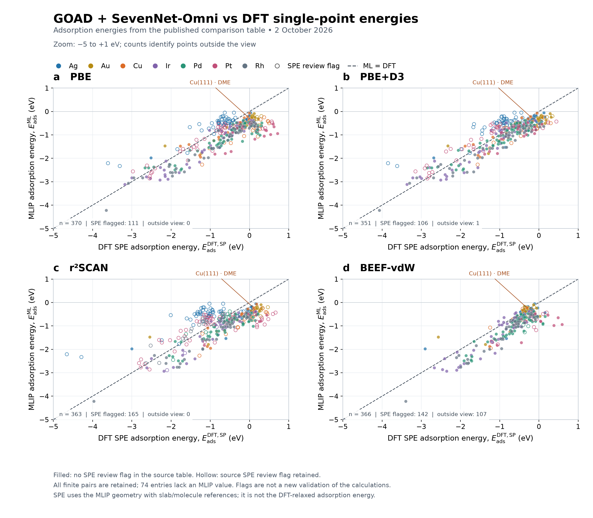
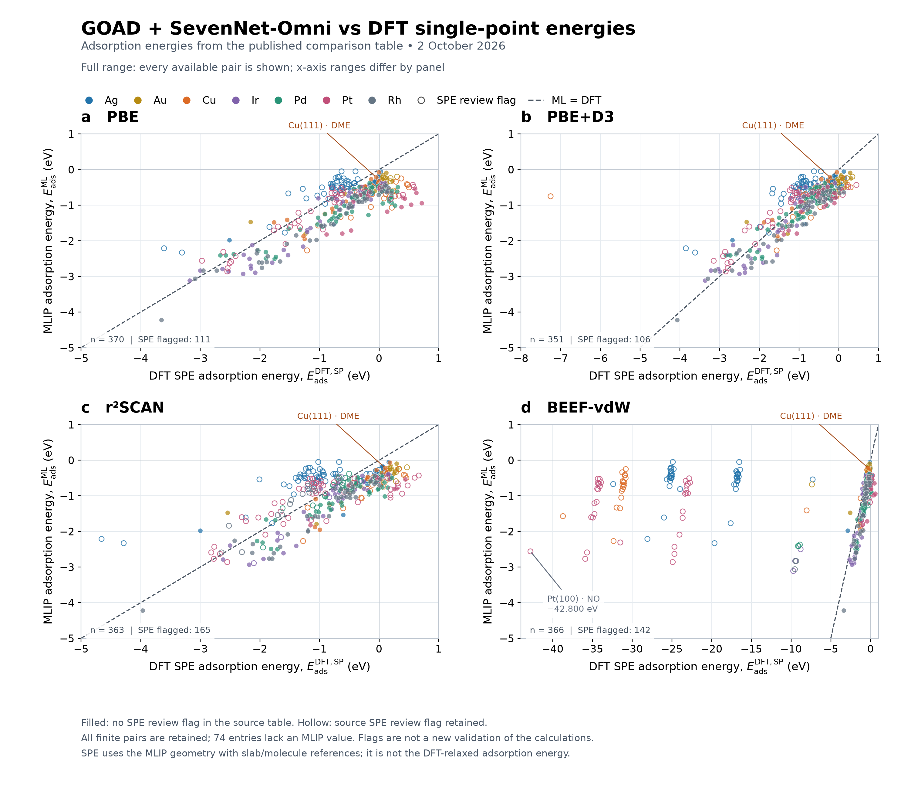
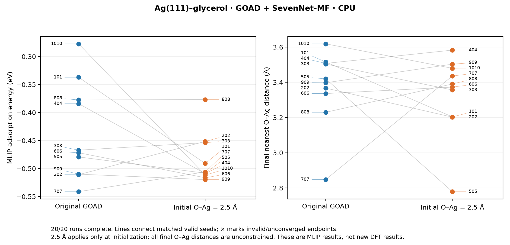

Adsorption search and DFT validation
Research update · 2 October 2026
Published snapshot: October 02, 2026, 05:44 PM MDT. Calculation and queue records retain their own UTC check times. This page does not poll the clusters.
GOAD + SevenNet-Omni versus DFT single points
The horizontal axis is the DFT single-point adsorption energy at the MLIP geometry; the vertical axis is the MLIP adsorption energy. Each panel uses one functional: PBE, PBE+D3, r²SCAN, or BEEF-vdW. These are the values in the published comparison table, rather than DFT-relaxed energies.
Explore all molecule and surface labels interactively · PDF · All plotted values (CSV)

The zoomed view covers −5 to +1 eV; 108 points lie outside it (1 PBE+D3 and 107 BEEF-vdW). All finite pairs remain in the full-range view and downloads. Another 74 entries lack MLIP energies and are listed separately. Large differences and flagged reference or potential issues require checking before interpreting model accuracy.
Show full range, including outliers

Missing MLIP entries · Numerical checks · Plotting script · Source retrieval record
Lowest converged structures from independent pymatgen starts
These five selections are all PBE+D3. Each is the lowest-energy converged candidate within its own system, using matched slab and molecular references. They were not selected by comparing total energies across functionals. The audit found 54 converged candidates among 60 starting structures.
| System | DFT Eads (eV) | Nearest O–metal (Å) | Converged / starts | Final structure |
|---|---|---|---|---|
| Ag111 · DME | -0.4471 | 2.582 | 8/8 | CIF · VASP |
| Ag111 · acetaldehyde | -0.2789 | 2.731 | 8/8 | CIF · VASP |
| Ag111 · glycerol | -0.3832 | 2.747 | 19/24 | CIF · VASP |
| Cu111 · DME | -0.6036 | 2.428 | 10/10 | CIF · VASP |
| Cu111 · ethanol | -0.5030 | 3.047 | 9/10 | CIF · VASP |
DME denotes dimethyl ether, CH₃OCH₃. Structure filenames retain the initial site, anchor, and tilt for provenance; these labels do not necessarily describe the final relaxed site. Lowest among tested starts does not establish a global minimum.
Selected structures and references · Every candidate · Selection audit and source paths
Does an initial O–Ag distance of 2.5 Å change GOAD results?
Complete · 20/20 completed · 20 valid endpoints · job 59224069
Ten paired seeds compare the original GOAD initialization against a rigid vertical shift of each initial candidate to a nearest O–Ag distance of 2.5 Å. The original rule sets a 2.3 Å vertical height, which differs from an interatomic distance. Both groups use GOAD without charge guidance and the same SevenNet-MF model (7net-mf-ompa, omat24), CPU references, and evaluation budget.
The distance is applied only to the initial population. Subsequent search and final relaxation have no O–Ag distance constraint. Orientations, internal conformations, and lateral positions are unchanged by the initial shift. This separates a placement effect from a change in search algorithm.

Lower MLIP energy alone does not demonstrate improved DFT accuracy. Promising distinct endpoints need comparison under the same DFT functional and reference convention. This CPU model is separate from the SevenNet-Omni model in the SPE panels above.
Lowest MLIP-energy endpoint in each group (download final extended XYZ): Original GOAD: -0.5414 eV (seed 707) · Initial O–Ag = 2.5 Å: -0.5197 eV (seed 909). Compare these best-of-group results alongside the paired seeds, rather than treating success in some seeds as a consistent improvement.
All completed searches · Paired differences · PDF · Protocol · Snapshot time
New BEEF-vdW validation on Perlmutter
Scheduler snapshot: 71 pending · 2026-10-02T23:37:38.676304+00:00
71 individual regular CPU jobs were submitted: 60 independent pymatgen starts, five GOAD endpoints, and six slab or gas references. They cover Ag(111)–DME, acetaldehyde, and glycerol, plus Cu(111)–DME and ethanol.
This campaign uses fresh component references and BEEF-vdW with ZAB_VDW = −1.8867. Its energies must be kept separate from archived calculations with different settings. A scheduler completion by itself will not qualify a structure as converged: electronic and ionic convergence and the required references must also pass.
Submitted job IDs and paths · Queue snapshot · Calculation and restart protocol
Kestrel expansion: five metals × ten molecules
Inputs prepared and audited; submission not confirmed from this session.
Ag(111), Pt(111), Pd(111), Ir(111), and Cu(111) are crossed with glycerol, formate, formic acid, methane, O₂, NH₃, acetaldehyde, methanol, 1-propanol, and ethanol. Independent pymatgen placements sample top, bridge, and hollow sites with different anchors and tilts.
The prepared bundle contains 660 complex relaxations, 15 component references, and four scaling tests. It uses PBE+D3, ENCUT = 450 eV, a 2 × 2 × 1 slab mesh, and a force threshold of 0.05 eV/Å. Slab cells, fixed layers, and species potentials match within each adsorption-energy calculation. New gas references include triplet O₂ and a neutral CHO₂ radical for the formate convention.
Ag/Pt/Pd cells contain 36 metal atoms; Cu/Ir cells contain 64. Coverage therefore differs across metals. This initial campaign uses one isolated conformer and does not exhaust molecular conformations.
The proposed shared-node setup uses 26 MPI ranks per complex (13 for gas references), with four tests comparing 26 and 52 ranks before choosing production resources. The default submission limit is 20 concurrent dependency lanes, without arrays. These are planned settings, not measured optimal performance.
Target layout: /projects/ccpc/jcho/pymatgen/<surface>_<molecule>/PBE_D3/<start>/
All 50 systems and start counts · Full protocol and submission procedure · Input audit
Data preservation and next checks
This dated snapshot preserves numerical results, source paths, hashes, final structures, and calculation status separately. Existing website energy tables remain unchanged. Future cluster collections should append new records and retain their functional, model, geometry, cell, potential, and component-reference provenance.
Next checks are to validate distinct initialization-test endpoints with DFT, collect converged BEEF-vdW outputs and references, and submit the Kestrel campaign from an authenticated session after its scaling tests. DFT remains the reference for assessing prediction accuracy.
Artifact inventory and SHA-256 hashes · Snapshot generation script